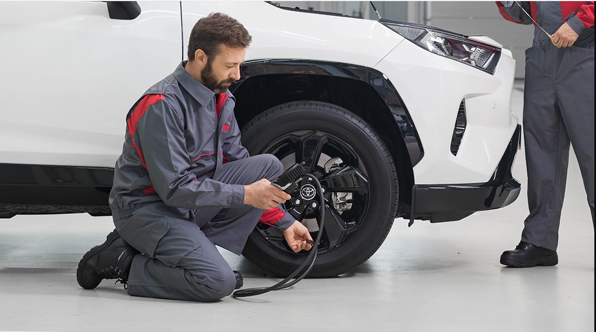

Anasayfa
Modeller
Galeri
İletişim


Kampanyalar
benimAudim
benimAudim mobil uygulamasıyla online servis randevusu alarak aracınızın durumunu takip edebilir ve online ödeme yapabilirsiniz. Üstelik online randevu aldığınızda servis işçilik hizmetlerinde %10 indirim fırsatından yararlanabilirsiniz.
Şimdi keşfedin
benimAudim
benimAudim mobil uygulamasıyla online servis randevusu alarak aracınızın durumunu takip edebilir ve online ödeme yapabilirsiniz. Üstelik online randevu aldığınızda servis işçilik hizmetlerinde %10 indirim fırsatından yararlanabilirsiniz.
Şimdi keşfedin
